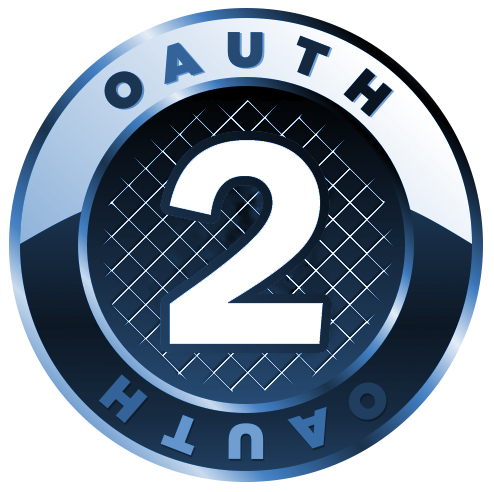
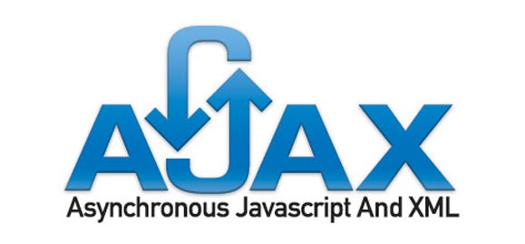
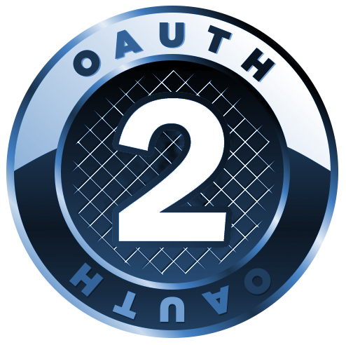
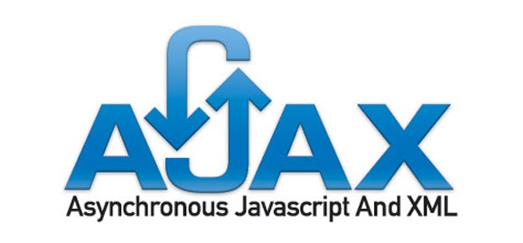

Chris Rune:
full-stack web developerAs a developer with a strong creative background, I am keenly focused on the human experience of the digital landscape. This portfolio showcases some of my most recent projects, including several single-page applications. Have a look around and let me know what you think.
Skills
Development Frameworks

Front-end

Back-end


Database Languages

Deployment
And more...
 



"like each tucked string tells..."
Projects
Full-stack MEAN application custom-built for Hudson Legal Group. Used by ~100 employees to enhance productivity. Reduces what was 30-60 minutes of work down to just a couple clicks. One happy writer has this to say:
“From the very first PL I drafted, I have been imagining a tool like Automagic... I am practically gleeful every time I use Automagic! I think it's a great interface, so intuitive and easy to use, and I feel like the luckiest person in the A2 office for being able to use it already.”Tani Bellestri, Legal Writing Specialist, Hudson PC, Ann Arbor
Legacy version (linked above) hosted on Heroku (free version, so give time for the instance to spin up) and deployed via the Heroku CLI. Functional version is hosted privately on company servers. Source is available on GitHub.
Single-page application made with Python and Flask on the back-end and a fully responsive front-end. Interfaces with PostgreSQL database and serves versatile API in JSON format. Features secure log-in via OAuth2 to manage user-specific content.
Application hosted internally by Python http server and reverse proxied through Nginx. View the GitHub repository for more info.
Single-page application integrating APIs via AJAX from Wikipedia, Google Maps and Yelp, offering users a dynamic, interactive experience. Fully responsive and adaptive layout for all devices and browsers.
Along with this portfolio, this application is served by Node internally and reverse proxied through Nginx. View the code on GitHub.
Javascript-based rogue-like game built with the ROT.js library and boat-loads of vanilla js. Heavily object-oriented in design, utilizing ES6 JS classes and prototypical inheritance to procedurally generate elements and make abstractions for content development. In constant development.
Hosted directly here via Nginx. The current version uses React for its UI, but is not necessarily stable. You can view the source on GitHub.
Fully responsive WordPress theme incorporating built-in action hooks and PHP functions for blog development. Unit tested using the standard WordPress test data.
Served via Nginx and PHP. The source code is available on GitHub.
Custom WordPress theme leveraging multiple plug-ins to give users full control over content within a unique layout. Fully responsive, adaptive and cross-browser compatible.
Again, served via Nginx and PHP. The source code is available on GitHub.
Other Projects
To view the code for these, and many more projects, please check out my GitHub profile. I am constantly building and learning new things that might not make it onto this site.
"...each hung bell's / bow swung finds tongue to fling out broad its name;"
About Me
I came into web development via a somewhat unusual route. I earned a BA in English in 2007, then graduated with a MFA in poetry from the University of Pittsburgh in 2009. After spending two years in South Korea, travelling the world, rennovating a house, getting married, etc. (i.e. "living life"), I found a new passion in web development.
Now, people always ask how I was able to make such a big transition. Honestly, there doesn't seem to be much different between the two. Code and Poetry usually serve different purposes, yet the underlying skills are mostly homologous. However, it's impossible to explain this without launching into a drawn-out speech. Meanwhile, the vast majority of people who write poetry don't know much about code, and the vast majority of coders don't know much about poetry. In the end, I find it is easier just to say the transition was difficult.
Disagree? Use the form below to tell me why.
(Or just tell me other stuff, which is also okay)
Let's get in touch, just like this bunny did.